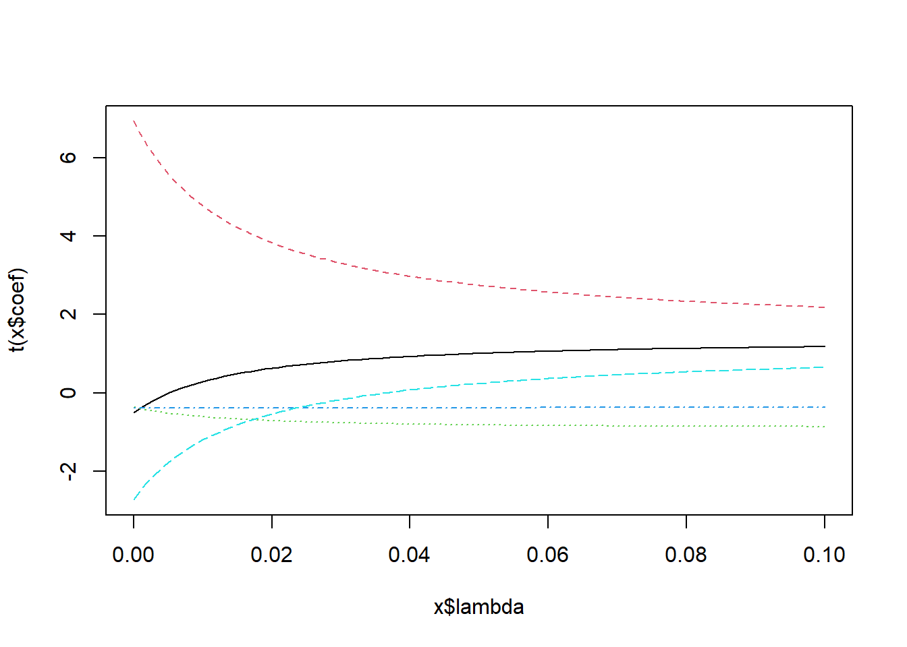
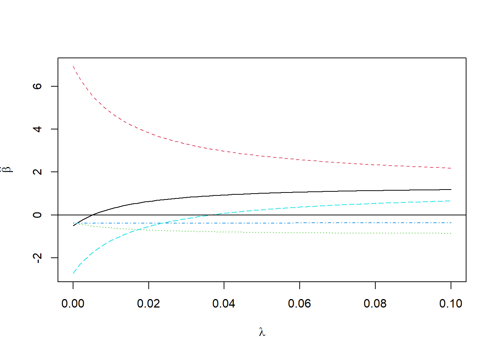
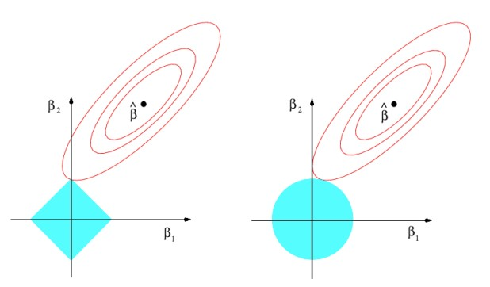
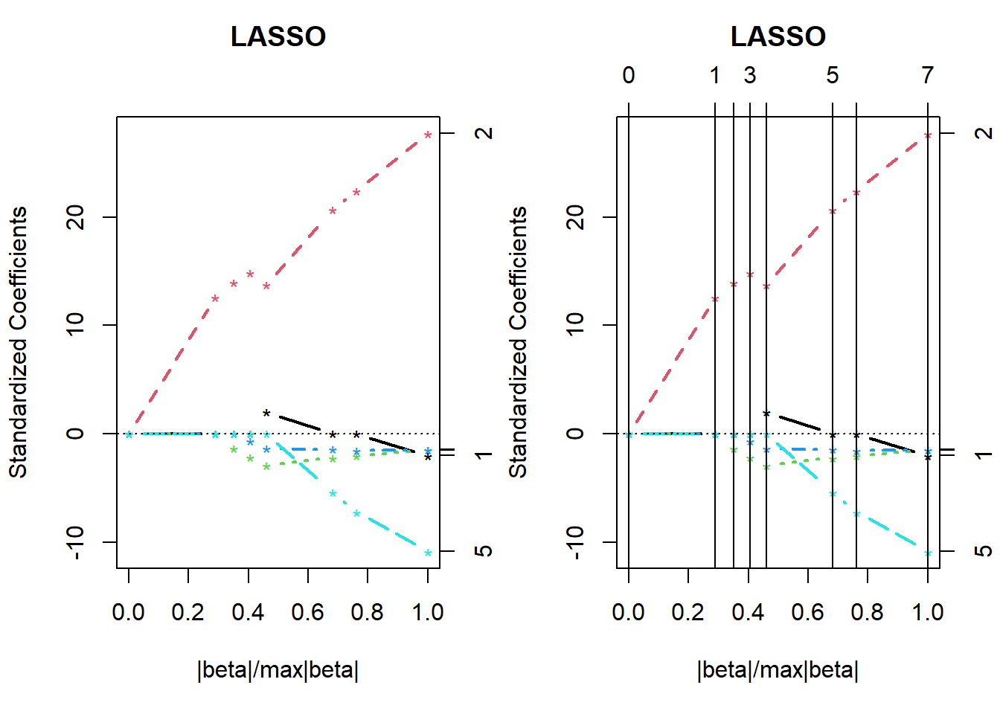

Chapter 10 능형회귀추정량과 LASSO 추정량
선형회귀모형에서 최소제곱추정량을 이용하여 모수를 추정할 시, 독립변수들 간의 상관관계가 커져 다중공선성이 조재할 경우에는 최소제곱추정량에 문제가 발생함
즉, 모수추정값이 실제 모수값으로부터 멀어지며 매우 불안정한 추정이 됨
예를 들어, 절대값이 너무 커지거나 부호가 뒤바뀔 수 있음음
10.1 능형회귀모형
- 다중회귀모형에서 행렬 \(\mathbf{X}\)와 반응벡터 \(\mathbf{Y}\)는 각각 표준화되었다고 하면
\[ \mathbf{Y=X\beta}+\epsilon \]
최소제곱추정량은 불편추정량이지만 다중공선성이 존재할 경우에는 최소제곱추정량의 분산이 커짐에 따라 매우 불안정한 추정량이 됨
이러한 문제를 해결하기 위한 방법으로 능형회귀(ridge regression)가 있음
\(\mathbf{X}'\mathbf{X}\)의 대각선상에 작은 상수(constant)를 더해, 즉 능형모수의 적절한 선택으로 향상된 추정량을 얻을 수 있으며 이렇게 구한 능형추정량은 불편추정량은 아니지만 잔차제곱합이 작으면서 모수에 가까울 확률이 크게 됨
Hoerl과 Kennard (1970)가 능형모수를 제안한 이후 Lawless와 Wang (1976), McDonald와 Galarneau (1975) 등에 의해 능형모수 선택방법에 대한 여러 가지 방법이 제안되었음
\(\beta\)에 대한 최소제곱추정량 \(b=(\mathbf{X}'\mathbf{X})^{-1}\mathbf{X}'\mathbf{Y}\)와 \(\beta\)와의 거리 제곱은
\[ L^2=(b-\beta)'(b-\beta) \]
- \(\mathbf{X}'\mathbf{X}\)의 고유값을 \(\lambda_i, i=1, 2, \ldots, p\)라고 하고 \(L^2\)의 기대값을 구하면
\[ \begin{align} E(L^2)&=E[(b-\beta)'(b-\beta)] \\ &=trE[(b-\beta)'(b-\beta)] \\ &=Etr[(b-\beta)'(b-\beta)] \\ &=\sum_{i=1}^pVar(b_i) \\ &= \sigma^2\sum_{i=1}^p\lambda_i^{-1} \end{align} \]
독립변수들 간에 완전에 가까운 다중공선성이 존재하면 고유값 \(\lambda_i\) 중에 거의 0에 가까운 값이 있게 되며 \(b\)는 \(\beta\)로부터 멀리 떨어져 있게 되어 \(b\)가 최소제곱추정량임에도 불구하고 \(\beta\)에 대한 좋은 추정량이라고 볼 수 없음
이와 같은 단점을 보완하기 위해 Hoerl과 Kennard (1970)는 다음과 같은 추정량으로 능형모수(ridge parametr) \(\lambda\)를 포함한 능형추정량(ridge estimator)을 제안함
\[ b_{\lambda}=(\mathbf{X}'\mathbf{X}+\lambda I)^{-1}\mathbf{X}'\mathbf{Y}, \,\,\, \lambda>0 \]
능형추정량은 모수에 대한 축소추정량(shrinkage estimator)이라 볼 수 있으며 편의추정량(biased estimator) 임
편의량을 작게 하면서 축소량을 조절하는 능형모수를 결정해야함
능형추정량에 대해 기대값을 구해 보면
\[ \begin{align} E[b(\lambda)]&=(\mathbf{X}'\mathbf{X}+\lambda I)^{-1}\mathbf{X}'E[\mathbf{Y}] \\ &=(\mathbf{X}'\mathbf{X}+\lambda I)^{-1}\mathbf{X}'\mathbf{X\beta} \ne \beta \end{align} \]
따라서 능형추정량은 불편추정량이 아님
능형추정량의 분산
\[ Var[b(\lambda)]=(\mathbf{X}'\mathbf{X}+\lambda I)^{-1}\mathbf{X}'\mathbf{X}(\mathbf{X}'\mathbf{X}+\lambda I)^{-1}\sigma^2 \]
- 능형추정량 \(b(\lambda)\)로 적합한 모형에서 잔차제곱합은 최소제곱추정량 \(b\)를 사용한 경ㅇ보다 크게 됨
\[ \begin{align} [\mathbf{Y-X}b(\lambda)]'[\mathbf{Y-X}b(\lambda)]&=(\mathbf{Y-X}b)'(\mathbf{Y-X}b)+[b(\lambda)-b]'\mathbf{X}'\mathbf{X}[b(\lambda)-b] \\ &> (\mathbf{Y-X}b)'(\mathbf{Y-X}b) \end{align} \]
- 능형모수 \(\lambda\)를 갖는 능형추정량 \(b(\lambda)\)와 \(\beta\)간 거리의 제곱
\[ L^2=(b(\lambda)-\beta)'(b(\lambda)-\beta) \]
- 기대값을 구하면
\[ \begin{align} E[L^2(\lambda)]&=E[(b(\lambda)-\beta)'(b(\lambda)-\beta)] \\ &=\sigma^2tr[(\mathbf{X}'\mathbf{X}+\lambda I)^{-1}\mathbf{X}'\mathbf{X}(\mathbf{X}'\mathbf{X}+\lambda I)^{-1}]+\lambda^2\beta(\mathbf{X}'\mathbf{X}+\lambda I)^{-2}\beta \\ &= \sigma^2\sum_{i=1}^k\lambda_i(\lambda_i+\lambda)^{-2}+\lambda^2\beta'(\mathbf{X}'\mathbf{X}+\lambda I)^{-2}\beta \\ &= 총분산 + 편의제곱 \end{align} \]
- Hoerl과 Kennard (1970)는 \(E[L^2(\lambda)]<E[L^2]\)이 성립되는 \(\lambda>0\)이 항상 존재함을 증명하여 능형추정량이 최소제곱추정량보다 거리의 제곱 관점에서 우수할 수 있음을 보였음
10.2 능형모수추정
- 실제로 능형회귀모형을 사용하려면 능형모수를 결정해야 함
10.2.1 능형추정량의 성질
행렬 \(\mathbf{X}'\mathbf{X}\)의 고유값으로 구성된 행렬 \(\Lambda\)와 \(\mathbf{X}'\mathbf{X}\)의 고유벡터 \(e_1, \cdots, e_k\)를 열(column)로 구성된 행렬 \(P\)를 이용해 \(\mathbf{X}'\mathbf{X}\)를 다시 표현할 수 있음
즉,
\[ \Lambda=\begin{pmatrix} \lambda_1&0&\cdots&0\\ 0&\lambda_2&\cdots&0 \\ \vdots & \vdots &&\vdots\\ 0&0&\cdots&\lambda_p \end{pmatrix}, \,\,\, P=[e_1,e_2,\cdots,e_p] \]
- 일때 \(\mathbf{X}'\mathbf{X}=P\Lambda P'\), \(P'P=PP'=I\)이며 다음을 만족함
\[ (\mathbf{X}'\mathbf{X}-\lambda_iI)e_i=0 , \quad i=1,2,\cdots, p \]
- 변환행렬 \(P\)를 이용해 \(Z=\mathbf{X}P, \quad \alpha=P'\beta\)로 두면
\[ \mathbf{Y=X\beta}+\epsilon=\mathbf{X}P'P\beta+\epsilon=Z\alpha+\epsilon, \,\,\, \epsilon\sim N(0,\sigma^2I) \]
- \(\alpha\)에 대한 최소제곱추정량을 구한 \(Z'Z=P'\mathbf{X}'\mathbf{X}P=\Lambda\)이므로
\[ \hat{\alpha}=(Z'Z)^{-1}Z'\mathbf{Y}=\Lambda^{-1}Z'\mathbf{Y} \]
따라서 $=P가 됨
적합된 모형의 잔차제곱합을 구하면
\[ SSE(\hat{\alpha})=(\mathbf{Y}-Z\hat{\alpha})'(\mathbf{Y}-Z\hat{\alpha})=\mathbf{Y}'\mathbf{Y}-\hat{\alpha}Z'\mathbf{Y} \]
- \(\hat{\alpha}\)의 분산을 구하면
\[ Var(\hat{\alpha})=Var(\Lambda^{-1}Z'\mathbf{Y})=\Lambda^{-1}Z'Var(\mathbf{Y})Z\Lambda^{-1}=\sigma^2\Lambda^{-1} \]
- \(\alpha\)에 대한 응형추정량은
\[ \hat{\alpha(\lambda)=(Z'Z+\lambda I)^{-1}}Z'\mathbf{Y}=(\Lambda+\lambda I)^{-1}Z'\mathbf{Y}=(\Lambda+\lambda I)^{-1}\Lambda\hat{\alpha} \]
- \(\hat{\alpha}(\lambda)\)에 대한 분산을 구해보면
\[ \begin{align} Var[\hat{\alpha}(\lambda)]&=Var[(\Lambda+\lambda I)^{-1}Z'\mathbf{Y}] \\ &=(\Lambda+\lambda I)^{-1}Z'Var(\mathbf{Y})Z(\Lambda+\lambda I)^{-1}) \\ &=\alpha^2\Lambda(\Lambda+\lambda I)^{-2} \end{align} \] - \(\hat{\alpha}(\lambda)\)에 대한 편의(bias)
\[ E[\hat{\alpha}(\lambda)-\alpha]=[(\Lambda+\lambda I)^{-1}\Lambda-I]\alpha \] - 따라서 \(\hat{\alpha}(\lambda)\)은 \(\alpha\)에 대한 불편추정량은 아님
- 능형모수 \(\lambda\)를 갖는 능형추정량 \(\hat{\alpha}(\lambda)\)와 \(\alpha\) 간 거리의 제곱 \(L^2(\lambda)=(\hat{\alpha}(\lambda)-\alpha)'(\hat{\alpha}(\lambda)-\alpha)\)에 대해 기대값, 즉 \(\hat{\alpha}(\lambda)\)에 대한 평균제곱오차를 구하면
\[ \begin{align} E[L^2(\lambda)]&=E[(\hat{\alpha}(\lambda)-\alpha)'(\hat{\alpha}(\lambda)-\alpha)] \\ &= trVar[\hat{\alpha}(\lambda)]+(\hat{\alpha}의 편의)^2 \\ &=\sigma^2tr[\Lambda(\Lambda+\lambda I)^{-1}]+\alpha'[(\Lambda+\lambda I)^{-1}\Lambda-I]'[(\Lambda+\lambda I)^{-1}\Lambda-I]\alpha \\ &=\sigma^2 \sum_{i=1}^p \frac{\lambda_i}{(\lambda_i+\lambda)^2}+\sum_{i=1}^{p} \frac{\lambda^2\alpha_i^2}{(\lambda_i+\lambda)^2} \end{align} \]
여기서 \(\alpha=(\alpha_1, \alpha_2, \cdots, \alpha_p)'\)
\(E[L^2(0)]=\sigma^2\sum_{i=1}^p\lambda_i^{-1}=E(L^2)\)이며 \(E[L^2(\lambda)]\)을 \(\lambda\)로 미분하면
\[ \frac{dE[L^2(\lambda)]}{d\lambda}=-2\sigma^2\sum_{i=1}^p\frac{\lambda_i}{(\lambda_i+\lambda)^3}+2\lambda\sum_{i=1}^p\frac{\lambda_i\alpha_i^2}{(\lambda_i+\lambda)^3} \]
- \(L^2(\lambda)\)는 \(\lambda\)에 대한 연속함수이고 \(\lambda \rightarrow 0+\)로 접근할 때,
\[ lim_{\lambda\rightarrow0+}\frac{dE[L^2(\lambda)]}{d\lambda}=-2\sigma^2\sum_{i=1}^p\frac{1}{\lambda_i^2}<0 \]
- \(L^2(\lambda)\)는 \(\lambda\rightarrow 0+\)일 때 감소함수가 되어 \(E[L^2(\lambda)]<E(L^2)\)인 \(\lambda\)가 존재함을 알 수 있음. 그러므로 이러한 조건을 만족하는 적절한 능형모수 \(\lambda\)를 선택할 수 있음
10.2.2 능형모수추정
- Hoerl과 Kenard (1970)은 능형추정량에 대한 능형모수추정량으로 HKB (Hoerl and Kennard biased estimator)을 제안함
\[ \lambda_{HKB}=\frac{p\hat{\sigma}^2}{\hat{\alpha}'\hat{\alpha}} \]
여기서 \(\hat{\sigma}^2=\frac{\mathbf{Y}'\mathbf{Y}-\hat{\alpha}Z'\mathbf{Y}}{n-k-1}\), \(\hat{\alpha}=P'\beta\)
Lawless와 Wang (1975)은 다음의 추정량을 제안
\[ \lambda_{LW}=\frac{p\hat{\sigma}^2}{\sum_{i=1}^k \lambda_i \hat{\alpha}} \]
- 일반화 교차타당성(generalized cross-validation) 통계량은 다음과 같음
\[ GCV(\lambda)=\frac{1}{n}\frac{RSS(\lambda)}{\{1-p(\lambda)/n\}^2} \]
여기서 \(p(\lambda)=tr\{\mathbf{X}(\mathbf{X}'\mathbf{X}-\lambda_iI)^{-1}\mathbf{X}' \}\), \(RSS(\lambda)\): 능형모수 \(\lambda\)인 경우 적합한 모형에 대한 잔차제곱합
일반화 교차타당성을 최소화하는 값으로 구하는 능형모수추정량
\[ \lambda_{GCV}=argmin_{\lambda}GCV(\lambda) \]
10.2.3 능형트레이스
\(\lambda\) 값이 0에서 1까지 증가할 경우 능형추정량 \(b(\lambda)=(\mathbf{X}'\mathbf{X}-\lambda_iI)'\mathbf{X}'\mathbf{Y}\), \(\lambda>0\)을 계산하여 각 모수에 대한 능형추정값을 구해 변화하는 선을 그려 \(b_i(\lambda)\), \(i=1,2,\cdots, p\)의 움직임을 나타낸 것을 능형트레이스(ridge trace)라고 함
\(b_i(\lambda)\) 값들이 급격히 변화하지 않고 안정되어가는 \(\lambda\) 값을 능형모수로 선택함
선택된 능형모수값은 능형추정량을 구했을 때 다중공선성이 거의 제거된 상태가 됨
이와 같이 능형모수변화에 따른 회귀모수추정값의 변화를 참고하여 \(\lambda\) 값을 선택할 수 있음
그러나 이 방법은 주관에 따라 선택하는 \(\lambda\) 값이 조금씩 다를 수 있음
R에서는 library(MASS)와 lm.ridge() 함수를 사용해 능형회귀를 수행할 수 있으며 select() 함수를 이용해 능형모수의 추정값을 구할 수 있음
lm.ridge() 함수를 이용해 능형회귀모형을 구할 수 있으며 select() 함수를 이용하여 Hoerl과 Kenard 편의추정량, Lawless와 Wang 추정량, GCV (generalized cross-validation)를 최소화하는 추정량 등 최적의 능형모수추정값을 출력할 수 있음
10.2.4 Example
R에 내장된 longley 데이터에 대해 VIF 값을 구해 보면 매우 높아 최소제곱추정량은 불안정한 추정량으로 판단되어 능형회귀추정량을 구하고자 함
5개 설명변수 GNP.deflator, GNP, Unemployed, Armed.Forces, Population와 반응변수 Employed에 대한 능형회귀모형을 적합해보자.
데이터
longley## GNP.deflator GNP Unemployed Armed.Forces Population Year Employed
## 1947 83.0 234.289 235.6 159.0 107.608 1947 60.323
## 1948 88.5 259.426 232.5 145.6 108.632 1948 61.122
## 1949 88.2 258.054 368.2 161.6 109.773 1949 60.171
## 1950 89.5 284.599 335.1 165.0 110.929 1950 61.187
## 1951 96.2 328.975 209.9 309.9 112.075 1951 63.221
## 1952 98.1 346.999 193.2 359.4 113.270 1952 63.639
## 1953 99.0 365.385 187.0 354.7 115.094 1953 64.989
## 1954 100.0 363.112 357.8 335.0 116.219 1954 63.761
## 1955 101.2 397.469 290.4 304.8 117.388 1955 66.019
## 1956 104.6 419.180 282.2 285.7 118.734 1956 67.857
## 1957 108.4 442.769 293.6 279.8 120.445 1957 68.169
## 1958 110.8 444.546 468.1 263.7 121.950 1958 66.513
## 1959 112.6 482.704 381.3 255.2 123.366 1959 68.655
## 1960 114.2 502.601 393.1 251.4 125.368 1960 69.564
## 1961 115.7 518.173 480.6 257.2 127.852 1961 69.331
## 1962 116.9 554.894 400.7 282.7 130.081 1962 70.551library(MASS)
library(car)## 필요한 패키지를 로딩중입니다: carDatadata(longley)
lm.g <- lm(Employed~GNP.deflator+GNP+Unemployed+Armed.Forces+Population, data=longley)
summary(lm.g)##
## Call:
## lm(formula = Employed ~ GNP.deflator + GNP + Unemployed + Armed.Forces +
## Population, data = longley)
##
## Residuals:
## Min 1Q Median 3Q Max
## -0.55324 -0.36478 0.06106 0.20550 0.93359
##
## Coefficients:
## Estimate Std. Error t value Pr(>|t|)
## (Intercept) 92.461308 35.169248 2.629 0.0252 *
## GNP.deflator -0.048463 0.132248 -0.366 0.7217
## GNP 0.072004 0.031734 2.269 0.0467 *
## Unemployed -0.004039 0.004385 -0.921 0.3788
## Armed.Forces -0.005605 0.002838 -1.975 0.0765 .
## Population -0.403509 0.330264 -1.222 0.2498
## ---
## Signif. codes: 0 '***' 0.001 '**' 0.01 '*' 0.05 '.' 0.1 ' ' 1
##
## Residual standard error: 0.4832 on 10 degrees of freedom
## Multiple R-squared: 0.9874, Adjusted R-squared: 0.9811
## F-statistic: 156.4 on 5 and 10 DF, p-value: 3.699e-09vif(lm.g)## GNP.deflator GNP Unemployed Armed.Forces Population
## 130.829201 639.049777 10.786858 2.505775 339.011693lmr <- lm.ridge(Employed~GNP.deflator+GNP+Unemployed+Armed.Forces+Population, data=longley, lambda=seq(0,0.1,0.001))
lmr$coef## 0.000 0.001 0.002 0.003 0.004
## GNP.deflator -0.5063821 -0.3814389 -0.2711150 -0.1730063 -0.08520842
## GNP 6.9295594 6.5937389 6.2968403 6.0324670 5.79555102
## Unemployed -0.3654189 -0.4024203 -0.4350838 -0.4641224 -0.49010099
## Armed.Forces -0.3776738 -0.3784862 -0.3791562 -0.3797075 -0.38015859
## Population -2.7177183 -2.4813753 -2.2723489 -2.0861510 -1.91922583
## 0.005 0.006 0.007 0.008 0.009
## GNP.deflator -0.006192822 0.0652812 0.1302314 0.1895004 0.2437918
## GNP 5.582025536 5.3885889 5.2125330 5.0516153 4.9039635
## Unemployed -0.513472702 -0.5346056 -0.5538014 -0.5713101 -0.5873404
## Armed.Forces -0.380524573 -0.3808176 -0.3810476 -0.3812229 -0.3813504
## Population -1.768719852 -1.6323165 -1.5081156 -1.3945438 -1.2902871
## 0.010 0.011 0.012 0.013 0.014 0.015
## GNP.deflator 0.2936980 0.3397208 0.3822885 0.4217688 0.4584791 0.4926947
## GNP 4.7680014 4.6423933 4.5259992 4.4178409 4.3170736 4.2229642
## Unemployed -0.6020680 -0.6156416 -0.6281884 -0.6398174 -0.6506228 -0.6606862
## Armed.Forces -0.3814358 -0.3814841 -0.3814994 -0.3814855 -0.3814453 -0.3813815
## Population -1.1942398 -1.1054644 -1.0231612 -0.9466436 -0.8753189 -0.8086728
## 0.016 0.017 0.018 0.019 0.020 0.021
## GNP.deflator 0.5246557 0.5545726 0.5826303 0.6089923 0.6338034 0.6571925
## GNP 4.1348738 4.0522423 3.9745772 3.9014434 3.8324553 3.7672697
## Unemployed -0.6700788 -0.6788632 -0.6870941 -0.6948201 -0.7020841 -0.7089244
## Armed.Forces -0.3812966 -0.3811925 -0.3810712 -0.3809340 -0.3807826 -0.3806181
## Population -0.7462566 -0.6876774 -0.6325897 -0.5806880 -0.5317016 -0.4853899
## 0.022 0.023 0.024 0.025 0.026 0.027
## GNP.deflator 0.6792747 0.7001529 0.7199197 0.7386583 0.7564439 0.7733447
## GNP 3.7055803 3.6471130 3.5916213 3.5388835 3.4886992 3.4408870
## Unemployed -0.7153752 -0.7214670 -0.7272272 -0.7326806 -0.7378495 -0.7427541
## Armed.Forces -0.3804417 -0.3802543 -0.3800569 -0.3798502 -0.3796351 -0.3794121
## Population -0.4415377 -0.3999527 -0.3604618 -0.3229094 -0.2871549 -0.2530709
## 0.028 0.029 0.030 0.031 0.032 0.033
## GNP.deflator 0.7894223 0.8047331 0.8193282 0.8332544 0.8465545 0.85926787
## GNP 3.3952824 3.3517357 3.3101104 3.2702818 3.2321358 3.19556773
## Unemployed -0.7474128 -0.7518422 -0.7560576 -0.7600729 -0.7639007 -0.76755282
## Armed.Forces -0.3791819 -0.3789450 -0.3787018 -0.3784530 -0.3781988 -0.37793960
## Population -0.2205419 -0.1894628 -0.1597377 -0.1312792 -0.1040070 -0.07784776
## 0.034 0.035 0.036 0.037 0.038
## GNP.deflator 0.87143048 0.88307555 0.89423370 0.90493316 0.91520007
## GNP 3.16048143 3.12678841 3.09440707 3.06326205 3.03328368
## Unemployed -0.77103989 -0.77437178 -0.77755760 -0.78060574 -0.78352398
## Armed.Forces -0.37767582 -0.37740776 -0.37713569 -0.37685990 -0.37658063
## Population -0.05273384 -0.02860311 -0.00539827 0.01693362 0.03844152
## 0.039 0.040 0.041 0.042 0.043
## GNP.deflator 0.92505863 0.93453128 0.94363886 0.9524008 0.9608350
## GNP 3.00440739 2.97657332 2.94972583 2.9238132 2.8987873
## Unemployed -0.78631952 -0.78899901 -0.79156867 -0.7940343 -0.7964012
## Armed.Forces -0.37629812 -0.37601257 -0.37572419 -0.3754332 -0.3751397
## Population 0.05917077 0.07916345 0.09845864 0.1170927 0.1350995
## 0.044 0.045 0.046 0.047 0.048 0.049
## GNP.deflator 0.9689585 0.9767868 0.9843347 0.9916159 0.9986433 1.0054289
## GNP 2.8746031 2.8512187 2.8285949 2.8066951 2.7854848 2.7649318
## Unemployed -0.7986744 -0.8008586 -0.8029581 -0.8049771 -0.8069194 -0.8087886
## Armed.Forces -0.3748438 -0.3745458 -0.3742458 -0.3739439 -0.3736401 -0.3733348
## Population 0.1525105 0.1693554 0.1856616 0.2014550 0.2167596 0.2315982
## 0.050 0.051 0.052 0.053 0.054 0.055
## GNP.deflator 1.0119840 1.0183193 1.0244448 1.0303698 1.0361033 1.0416535
## GNP 2.7450059 2.7256787 2.7069234 2.6887149 2.6710294 2.6538446
## Unemployed -0.8105880 -0.8123208 -0.8139900 -0.8155984 -0.8171486 -0.8186432
## Armed.Forces -0.3730278 -0.3727194 -0.3724096 -0.3720985 -0.3717862 -0.3714728
## Population 0.2459921 0.2599612 0.2735243 0.2866992 0.2995025 0.3119500
## 0.056 0.057 0.058 0.059 0.060 0.061
## GNP.deflator 1.0470284 1.0522354 1.0572815 1.0621734 1.0669175 1.0715195
## GNP 2.6371394 2.6208939 2.6050891 2.5897074 2.5747317 2.5601461
## Unemployed -0.8200845 -0.8214747 -0.8228159 -0.8241101 -0.8253592 -0.8265649
## Armed.Forces -0.3711584 -0.3708429 -0.3705265 -0.3702093 -0.3698913 -0.3695725
## Population 0.3240565 0.3358360 0.3473019 0.3584667 0.3693422 0.3799398
## 0.062 0.063 0.064 0.065 0.066 0.067
## GNP.deflator 1.0759853 1.0803202 1.0845292 1.0886173 1.0925889 1.0964486
## GNP 2.5459355 2.5320854 2.5185821 2.5054128 2.4925649 2.4800269
## Unemployed -0.8277290 -0.8288531 -0.8299387 -0.8309872 -0.8320000 -0.8329785
## Armed.Forces -0.3692530 -0.3689328 -0.3686121 -0.3682908 -0.3679689 -0.3676466
## Population 0.3902701 0.4003433 0.4101690 0.4197563 0.4291140 0.4382504
## 0.068 0.069 0.070 0.071 0.072 0.073
## GNP.deflator 1.1002003 1.1038482 1.1073959 1.1108470 1.1142051 1.1174734
## GNP 2.4677875 2.4558360 2.4441624 2.4327569 2.4216103 2.4107137
## Unemployed -0.8339238 -0.8348372 -0.8357197 -0.8365726 -0.8373967 -0.8381931
## Armed.Forces -0.3673238 -0.3670006 -0.3666771 -0.3663531 -0.3660289 -0.3657044
## Population 0.4471732 0.4558901 0.4644082 0.4727344 0.4808750 0.4888365
## 0.074 0.075 0.076 0.077 0.078 0.079
## GNP.deflator 1.1206549 1.1237527 1.1267697 1.1297085 1.1325718 1.1353620
## GNP 2.4000589 2.3896376 2.3794423 2.3694656 2.3597003 2.3501399
## Unemployed -0.8389628 -0.8397065 -0.8404253 -0.8411198 -0.8417910 -0.8424394
## Armed.Forces -0.3653796 -0.3650545 -0.3647293 -0.3644039 -0.3640782 -0.3637525
## Population 0.4966246 0.5042452 0.5117035 0.5190049 0.5261544 0.5331566
## 0.080 0.081 0.082 0.083 0.084 0.085
## GNP.deflator 1.1380816 1.1407329 1.1433180 1.1458391 1.1482982 1.1506972
## GNP 2.3407777 2.3316077 2.3226239 2.3138205 2.3051922 2.2967337
## Unemployed -0.8430660 -0.8436712 -0.8442559 -0.8448207 -0.8453661 -0.8458927
## Armed.Forces -0.3634266 -0.3631006 -0.3627745 -0.3624483 -0.3621220 -0.3617958
## Population 0.5400161 0.5467374 0.5533245 0.5597817 0.5661126 0.5723211
## 0.086 0.087 0.088 0.089 0.090 0.091
## GNP.deflator 1.1530379 1.1553222 1.1575518 1.1597284 1.1618534 1.1639285
## GNP 2.2884398 2.2803059 2.2723272 2.2644992 2.2568177 2.2492785
## Unemployed -0.8464012 -0.8468920 -0.8473656 -0.8478227 -0.8482635 -0.8486887
## Armed.Forces -0.3614695 -0.3611431 -0.3608168 -0.3604905 -0.3601642 -0.3598379
## Population 0.5784108 0.5843849 0.5902469 0.5959999 0.6016469 0.6071910
## 0.092 0.093 0.094 0.095 0.096 0.097
## GNP.deflator 1.1659551 1.1679346 1.1698685 1.1717579 1.1736041 1.1754085
## GNP 2.2418777 2.2346113 2.2274756 2.2204672 2.2135825 2.2068183
## Unemployed -0.8490986 -0.8494938 -0.8498745 -0.8502412 -0.8505943 -0.8509341
## Armed.Forces -0.3595117 -0.3591855 -0.3588594 -0.3585334 -0.3582075 -0.3578816
## Population 0.6126348 0.6179813 0.6232329 0.6283922 0.6334616 0.6384436
## 0.098 0.099 0.100
## GNP.deflator 1.1771721 1.1788960 1.1805815
## GNP 2.2001714 2.1936386 2.1872170
## Unemployed -0.8512611 -0.8515754 -0.8518776
## Armed.Forces -0.3575559 -0.3572303 -0.3569048
## Population 0.6433403 0.6481540 0.6528868plot(lm.ridge(Employed~GNP.deflator+GNP+Unemployed+Armed.Forces+Population, data=longley, lambda=seq(0,0.1,0.001)))
select(lm.ridge(Employed~GNP.deflator+GNP+Unemployed+Armed.Forces+Population, data=longley, lambda=seq(0,0.1,0.001)))## modified HKB estimator is 0.01252421
## modified L-W estimator is 0.06136158
## smallest value of GCV at 0.007matplot(lmr$lambda, t(lmr$coef), type="l", xlab=expression(lambda), ylab=expression(hat(beta)))
abline(h=0)
select(lmr)## modified HKB estimator is 0.01252421
## modified L-W estimator is 0.06136158
## smallest value of GCV at 0.00710.3 LASSO 회귀모형
Tibshirani (1996)는 회귀계수 절대값의 합이 주어진 상수보다 작게 하는 조건하에서 잔차제곱합을 최소화하는 LASSO (least absolute shrinkage and selection operator) 기법을 제안
LASSO 추정량의 제한조건에 따라 회귀계수를 축소 추정하고 일부는 0으로 추정하게 됨
LASSO 추정량은 설명변수들의 부분집합 선택과 능형회귀의 특징을 동시에 포함하는 새로운 추정량으로 제안되었으며 이러한 아이디어는 다른 통계적 모형에서도 응용 될 수 있음
최근 LASSO 방법은 \(n<p\)인 고차원 데이터(high-dimensional data) 분석에 주로 활용되며 차원축소에 중요한 역할을 함
능형회귀는 모수를 축소 추정하므로 제한조건을 이용해 다음과 같이 표현할 수 있음
\[ \hat{\beta}^{ridge}=argmin\{\sum_{i=1}^n (Y_i-\beta_0-\sum_{j=1}^pX_{ij}\beta_j)^2+\lambda\sum_{j=1}^p\beta_j^2 \} \]
여기서 \(\lambda\)는 모수의 축소량(amount of shrinkage of the parameter estimates) 조절상수로 \(\lambda\)값이 클수록 축소량이 커짐
위의 식은 다음과 같은 제한조건하에서 최소제곱추정량을 구하는 것과 같음
제한 조건 \(\sum_{i=1}^p\beta_j^2\le s\) 하에서
\[ \hat{\beta}^{ridge}=argmin\{\sum_{i=1}^n (Y_i-\beta_0-\sum_{j=1}^pX_{ij}\beta_j)^2\} \]
- 이러한 식을 다음과 같이 행렬로 표현
\[ RSS(\lambda)=(\mathbf{Y-X\beta)}'(\mathbf{Y-X\beta})+\lambda\beta'\beta \]
- 이를 최소화하도록 \(\hat{\beta}\)에 대해 풀면
\[ \hat{\beta}^{ridge}=(\mathbf{X}'\mathbf{X}+\lambda I)^{-1}\mathbf{X}'\mathbf{Y} \]
여기서 \(\mathbf{X}'\mathbf{X}\)가 특이(singular)할 때 능형회귀의 해가 더욱 의미 있게 됨
능형회귀에서 \(L_2\) penalty \(\sum_{j=1}^p \beta_j^2\)를 \(L_1\) LASSO penalty \(\sum_{j=1}^p|\beta_j|\)로 바꾸어 LASSO 추정량을 얻을 수 있음
이때 절편에 대해서는 제한 조건을 두지 않음
LASSO 추정량은 제한 조건 \(\sum_{i=1}^p|\beta_j|\le s\) 하에서
\[ \hat{\beta}^{LASSO}=argmin\{\sum_{i=1}^n (Y_i-\beta_0-\sum_{j=1}^pX_{ij}\beta_j)^2\} \]
회귀계수들 중 0으로 축소되는 계수가 생길 수 있어 회귀계수의 절대값이 크지 않은 설명변수를 모형에서 제외하는 효과가 있음
LASSO 추정량 계산시 \(\sum_{i=1}^n (Y_i-\beta_0-\sum_{j=1}^pX_{ij}\beta_j)^2\)를 최소화하도록 하는 경우를 벡터로 표현하면
\[ (\beta-\hat{\beta})'\mathbf{X}'\mathbf{X}(\beta-\hat{\beta})+constant \]
- 상수 \(C\)에 대해
\[ \{\beta: (\beta-\hat{\beta})'\mathbf{X}'\mathbf{X}(\beta-\hat{\beta})=C\} \]
최소제곱추정량 \(\hat{\beta}\)을 중심으로 타원체를 형서하며 타원 등고선(elliptical contour)을 가짐
\(p=2\)인 경우, LASSO 추정량과 능형추정량에 대한 기하학적 의미

- R에서는 library(lars)와 larv() 함수를 이용해 LASSO 추정량을 얻을 수 있음
10.4 R 활용 능형회귀 및 LASSO 회귀분석
library(lars)## Loaded lars 1.3data(longley)
attach(longley)
y <-longley[,7] #Employed
x <-cbind(GNP.deflator, GNP,Unemployed,Armed.Forces,Population)
lm.g<- lm(y~GNP.deflator+GNP+Unemployed+Armed.Forces+Population,
data=longley)
coef(lm.g)## (Intercept) GNP.deflator GNP Unemployed Armed.Forces Population
## 92.461307824 -0.048462828 0.072003849 -0.004038711 -0.005604956 -0.403508682object1 <- lars(x, y, type="lasso", trace=TRUE)## LASSO sequence
## Computing X'X .....
## LARS Step 1 : Variable 2 added
## LARS Step 2 : Variable 3 added
## LARS Step 3 : Variable 4 added
## LARS Step 4 : Variable 1 added
## LARS Step 5 : Variable 5 added
## Lasso Step 6 : Variable 1 dropped
## LARS Step 7 : Variable 1 added
## Computing residuals, RSS etc .....par(mfrow=c(1,2))
plot(object1, xvar="norm", lwd=2, lty=1:5, breaks=F, col=1:5)
plot(object1, xvar="norm", lwd=2, lty=1:5, breaks=T, col=1:5)
coeffs <- coef(object1)
coeffs## GNP.deflator GNP Unemployed Armed.Forces Population
## [1,] 0.00000000 0.00000000 0.000000000 0.000000000 0.0000000
## [2,] 0.00000000 0.03272990 0.000000000 0.000000000 0.0000000
## [3,] 0.00000000 0.03623013 -0.003723046 0.000000000 0.0000000
## [4,] 0.00000000 0.03857142 -0.005903681 -0.002479874 0.0000000
## [5,] 0.04762726 0.03577100 -0.008133690 -0.005032572 0.0000000
## [6,] 0.00000000 0.05372989 -0.006104005 -0.005316276 -0.1999999
## [7,] 0.00000000 0.05828404 -0.005611171 -0.005643175 -0.2680339
## [8,] -0.04846283 0.07200385 -0.004038711 -0.005604956 -0.4035087object1##
## Call:
## lars(x = x, y = y, type = "lasso", trace = TRUE)
## R-squared: 0.987
## Sequence of LASSO moves:
## GNP Unemployed Armed.Forces GNP.deflator Population GNP.deflator
## Var 2 3 4 1 5 -1
## Step 1 2 3 4 5 6
## GNP.deflator
## Var 1
## Step 7object1$R2## 0 1 2 3 4 5 6 7
## 0.0000000 0.9640977 0.9790109 0.9836596 0.9854503 0.9868874 0.9871415 0.9873777coef1 <- object1$beta ### Get rid of many zero coefficients
coef1 <- scale(coef1, center=FALSE, 1/object1$normx)
coef1## GNP.deflator GNP Unemployed Armed.Forces Population
## 0 0.000000 0.00000 0.000000 0.0000000 0.000000
## 1 0.000000 12.59954 0.000000 0.0000000 0.000000
## 2 0.000000 13.94697 -1.347432 0.0000000 0.000000
## 3 0.000000 14.84826 -2.136639 -0.6683967 0.000000
## 4 1.990605 13.77022 -2.943716 -1.3564217 0.000000
## 5 0.000000 20.68359 -2.209140 -1.4328878 -5.388172
## 6 0.000000 22.43673 -2.030775 -1.5209966 -7.221065
## 7 -2.025528 27.71824 -1.461676 -1.5106954 -10.870873
## attr(,"scaled:scale")
## [1] 0.023926017 0.002597707 0.002763069 0.003710183 0.037118332s1 <- apply(abs(coef1), 1, sum)
s1/max(s1)## 0 1 2 3 4 5 6 7
## 0.0000000 0.2890663 0.3508935 0.4050127 0.4602511 0.6817120 0.7619143 1.0000000